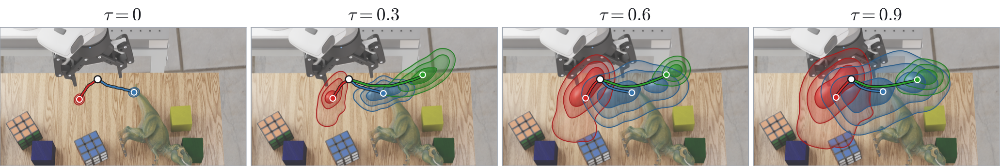
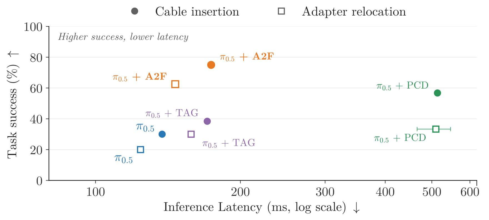
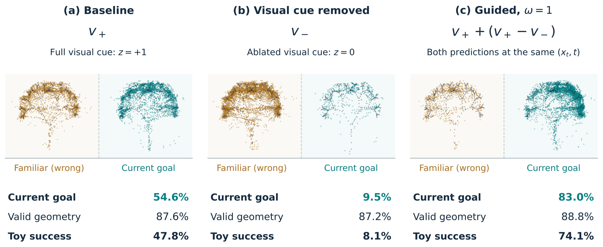

The policy’s own attention marks the visual evidence; masking it gives a degraded velocity v−, and the contrast with the full-evidence velocity v+ guides the action. No extra training, no external supervision, no auxiliary models.
Generalist vision-language-action (VLA) policies often rely on learned behavioral priors rather than adapting to changes in visual observations, limiting their generalization and control precision. Although these policies encode rich visual representations, their action generators may not effectively use the information relevant to the current task. We show that attention from the vision-language model (VLM) is subgoal-specific and dynamically shifts as the robot progresses through task execution. Building on this observation, ContrastFlow is a training-free method that converts task-relevant visual attention into corrective guidance for flow-based action generation: VLM attention identifies and selectively masks task-relevant visual regions, producing a degraded velocity prediction from the same frozen policy, and contrasting the original and degraded velocity fields gives a guidance signal that reinforces the influence of task-relevant visual evidence on action generation. Across simulation benchmarks, different VLA architectures, and real-world fine-grained manipulation tasks, it improves generalization to unseen scene configurations, increases control precision, and reduces residual action errors.
Method
The instruction’s text-to-vision attention lands on the objects the task names, in simulation and on the real robot. These are the tokens ContrastFlow withholds.
Guidance carries the plan past the policy’s own prediction, away from what it would do without the evidence. Red: evidence withheld (v−). Blue: full observation (v+). Green: the guided flow, which settles into a tight cluster on the yellow block.

Simulation
🧪 RoboLab-120 & ↔️ LIBERO-PRO position swap
+6.9 points on RoboLab-120 with π0.5 (one configuration for all 120 unseen tasks), +4.0 on top of Cosmos3’s own CFG, and the only intervention that improves all four LIBERO-PRO position-swap suites.
Success rate (%) of frozen policies with and without test-time intervention. Best per block in bold; “–” = not available. LIBERO-PRO Overall is the mean of its four suites.
Method
Key technique
RoboLab-120
LIBERO-PRO
Simple
Moderate
Complex
Overall
Spatial
Object
Goal
Long
Overall
Other generalist policies
π0-FAST
20.2
13.3
2.9
15.5
–
–
–
–
–
DreamZero
26.1
30.0
14.1
25.7
–
–
–
–
–
Vision-language-action model (π0.5)
Base policy
30.5
27.2
16.5
27.4
50.0
17.8
34.4
5.2
26.9
ACG
Action coherence guidance
36.4
30.3
19.4
32.0
50.8
16.4
35.4
5.2
27.0
CAG
Counterfactual language masking
34.2
30.3
25.3
31.7
49.2
15.2
26.4
1.0
23.0
TAG
Classifier-free guidance
–
–
–
–
50.6
21.8
30.4
10.2
28.3
ContrastFlow (ours)
Contrastive attention guidance
36.7
34.9
24.1
34.3
59.2
24.6
38.2
6.8
32.2
Δ vs. base
+6.2
+7.7
+7.6
+6.9
+9.2
+6.8
+3.8
+1.6
+5.3
World action model (Cosmos3)
Base policy (with CFG)
40.6
35.4
25.3
36.8
–
–
–
–
–
ContrastFlow (ours)
Contrastive attention guidance
45.5
36.7
32.9
40.8
–
–
–
–
–
Δ vs. base
+4.9
+1.3
+7.6
+4.0
–
–
–
–
–
MolmoAct2
Base policy
–
–
–
–
26.8
62.6
26.0
11.2
31.7
ContrastFlow (ours)
Contrastive attention guidance
–
–
–
–
30.0
62.8
29.4
10.8
33.3
On RoboLab-120, ContrastFlow improves 49 tasks, worsens 19 and ties 52 (95% bootstrap interval over tasks: +3.7 to +10.3 points), closing more than half of the gap between π0.5 and Cosmos3. Cosmos3 already samples with classifier-free guidance on the instruction; ContrastFlow keeps the instruction in both branches and contrasts the prediction with and without the visual evidence it attends to, so the two contrasts are complementary.
Real world
🦾 Tasks
Three tasks that each end in a fine alignment the policy must servo to: cable insertion, adapter relocation, and chemical titration.
📊 Success rates
ContrastFlow reaches the highest overall success on every task and backbone, with its largest gains where the unguided policy fails outright.
Real-world success rate (%). “–” = not run.
Method
Cable insertion
Adapter relocation
Titration
Small wrist rotation
Large wrist rotation
Target relocation
Overall
Short transfer
Medium transfer
Long transfer
Overall
Nominal setup
Burette height shift
Stand position shift
Overall
π0.5
Base policy
0.0
54.3
0.0
25.3
10.0
20.0
30.0
20.0
30.0
6.7
6.7
12.5
PCD
0.0
82.5
45.0
60.0
40.0
30.0
30.0
33.3
–
–
–
–
TAG
80.0
60.0
0.0
45.7
40.0
20.0
30.0
30.0
–
–
–
–
ContrastFlow (ours)
60.0
82.9
70.0
74.7
60.0
65.0
60.0
62.5
70.0
46.7
26.7
45.0
StarVLA
Base policy
0.0
30.0
–
24.0
0.0
0.0
0.0
0.0
–
–
–
–
ContrastFlow (ours)
0.0
70.0
–
56.0
0.0
40.0
90.0
43.3
–
–
–
–
⏱️ Success vs. latency
The most successful method on both tasks while staying close to the latency of the unguided π0.5; PCD is several times slower for a smaller gain.

🎯 Servoing
ContrastFlow recovers the orientation that π0.5 loses during cable insertion: both reach the edge of the expert range in position, but π0.5 rotates away from the demonstrated pose while ContrastFlow converges into the expert range.
Analysis
The instruction words lock onto the evidence by layer 3; the action expert’s attention catches up only at layers 11–13. ContrastFlow reads layer 12, where the words’ plateau ends and the action expert’s rise begins.
Controlled study
In a toy flow model with a familiar-goal bias, withholding the evidence exposes the bias (54.6% → 9.5% at the current goal), and adding the contrast corrects it (83.0%) while the endpoints stay on the valid geometry.

At shared early flow states, the contrast G = v+ − v− has cosine 0.976 with the baseline’s missing correction, and adding it removes 95.1% of the squared current-goal velocity error.
BibTeX
@article{contrastflow2026,
title = {Improving Generalist Robot Policies via Attention-Contrastive Guidance},
author = {Anonymous},
journal = {Under review},
year = {2026}
}